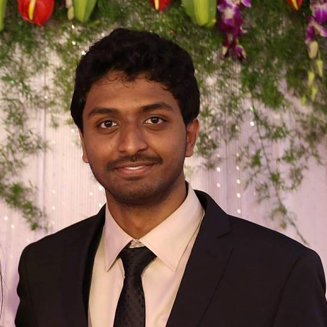

 As a current Masters student in physics at Miami University, I am passionate in applying cutting-edge computational tools combined with physics-based principles to build efficient medical and laboratory diagnostic devices. I found my interest in research during my undergraduate years at Miami University where I majored in Biophysics with a minor in Bioinformatics. I began my work in the Biomedical Optics Lab (OSIM) under the guidance of Dr. Karthik Vishwanath, on the project "The reliability and accuracy of estimating heart-rates from RGB video recorded on a consumer grade camera". This project gave me the opportunity to work with faculty from the Department of Psychology and equip me with the skills that go behind doing cutting-edge research. The project was later presented at the annual SPIE Photonics West conference, 2017 and published in the following proceedings.
As a current Masters student in physics at Miami University, I am passionate in applying cutting-edge computational tools combined with physics-based principles to build efficient medical and laboratory diagnostic devices. I found my interest in research during my undergraduate years at Miami University where I majored in Biophysics with a minor in Bioinformatics. I began my work in the Biomedical Optics Lab (OSIM) under the guidance of Dr. Karthik Vishwanath, on the project "The reliability and accuracy of estimating heart-rates from RGB video recorded on a consumer grade camera". This project gave me the opportunity to work with faculty from the Department of Psychology and equip me with the skills that go behind doing cutting-edge research. The project was later presented at the annual SPIE Photonics West conference, 2017 and published in the following proceedings.

I completed my undergraduate studies with a senior capstone project on the topic, "Extracting broadband optical properties from uniform optical phantoms: Inverse Adding-Doubling (IAD) & Integrating Sphere (IS)". This project provided me a more "hands-on" experience of setting-up OSIM's first IS system for reflectance/transmittance measurements, coupled with a supercontinuum laser. I also had the opportunity to explore the working of both the IAD and Monte-Carlo Simulations, and implement it with the IS system to provide accurate estimates of optical properties. I was able to present my findings at multiple conferences, which include OSAPS and SPIE and published in SPIE's 2018 proceedings.
I had the valuable opportunity to mentor and supervise the research porjects of students part of the Summer REU program, 2019 hosted by the Department of Physics at Miami University. === ADD MORE ====
My current work is on the the topic, "Exploring light-losses in Integrating Sphere measurements using Monte-Carlo simulations". Light loss through samples with finite dimensions is a prevelant problem that plagues IS measurements, and is highly reported in literature. This project aims to accurately measure the light lost in the IS measurements using a robust Monte-Carlo model of the setup. This project can improve the performace of commonly used high speed theoretical models such as the IAD in measuring the optical properties of a given sample.
I had lived in various parts of the world throughout my life, begining with my home in India, to my highschool in the Middle east and my undergraduate studies in the US. These opportunities have helped me work with people with different views and has provided me with the ability to bring a diverse set of views to any group that I work with. I am dedicated and strive to perform the best in all that I do with hopes of building a legacy which future scientist can expand upon to further human understanding.